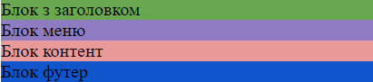
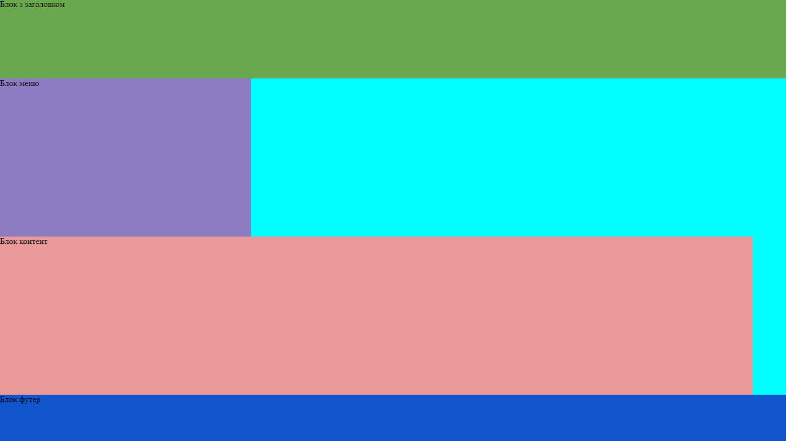
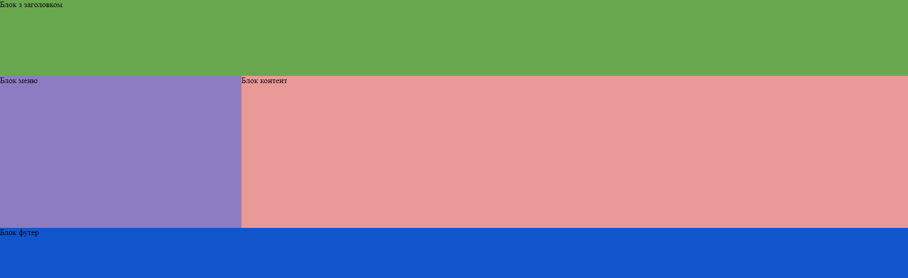

Лабораторна робота 1 студентки 1 курсу групи "Математика" Кубищенко Катерини Яковлівни
звіт до лабораторної роботи №4. Тема - CSS стилі. Павила підключення. Селектори стилів.
1. Приклад з таблиці 4.1.1
4.1.1
2. Приклади з таблиці 4.2
4.2(grey/pink)
4.2(grey/pink/white)
звіт до лабораторної роботи №5. Тема - CSS стилі. Стилі блоку.
1. Приклад
І етап

II етап

III етап

Фінальний результат
5/1
2.
Індивідуальна задача